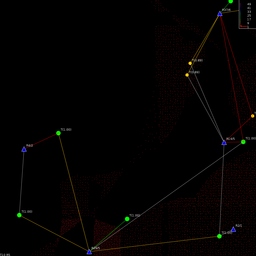

Transmit Only Receiver Placement
Transmit-Only (TO) sensor networks enable smaller and cheaper sensors, reduced energy consumption, and simpler over-the-air protocols. The challenge in these networks is to ensure that the vast majority (over 99%) of packets sent from a sensor actually reach a network sink. To assist in analyzing the possibilities of receiver placements, this project simulates placing receivers at various locations within the sensor network in order to minimize lost packets due to collisions.
The Algorithm
ALOHA got it wrong! If you think that colliding transmissions always cause packet loss, read-up on the capture effect. So, given a set of transmitter locations, where is the best place to put your receivers if you wish to maximize the number of packets captured during a collision?
The first step, after determining transmitter locations, is to go about calculating the set of pairwise capture disks for each pair of transmitters. That is, for each pair of transmitters in a 2-dimensional plane (t1, t2), the capture disk is the area where a receiver would be able to decode t1's packet during a collision with t2's packet. The math to calculate this is beyond the scope of this page, but you can check out the code for more details.
Once you have your capture disks, you then collect a set of possible receiver locations as the centers of the disks and the intersections of all disks. Then, for each possible solution point, determine how many capture disks contain that point. Sort the solution points in non-increasing order of capture disks, and select the maximum. Remove this point and its associated disks and repeat until you've found enough receivers or run out of disks or solution points.
Speeding Things Up
The original algorithm, while provably half-optimal, suffers from the significant practical drawback of requiring O(n6) time complexity to run. What this means is that if we want to simulate 100 transmitters (n &eq; 100), then we may require at most 1 trillion (1x1012) computations. To explain, 100 transmitters will generate 10,000 capture disks. For each disk, it may intersect every other disk, resulting in 100,000,000 solution points. These solution points must then be compared to each of the 10,000 disks, resulting in 1,000,000,000,000 comparisons. This makes the original algorithm impractical for implementation for any large number of devices (e.g., 1000).
A simple way to reduce the running time is to reduce the number of points to evaluate, since this is a dominant portion of the time complexity. A simple way to do this is to produce a "grid" of fixed points that will be evaluated during the simulation. The grid's point density can be adjusted appropriate to the actual deployment or the radio wavelength being used. The option is available using the "grid" or "recursive" algorithm values. The "recursive" option uses an adaptive grid search algorithm to identify local maxima in the search space.
Compiling
The code is built most easily with Apache Maven. In the main directory, just type:
mvn clean packageHow to Use
Once you've compiled the code with maven, your target
directory should have at least 2 JAR archives: with dependencies and without.
The simplest way to execute the application is the jar-with-dependencies
archive. It takes a single parameter, a configuration file (a sample is
included) which holds the primary runtime parameters. If your
configuration file is "myconfig.xml", then run the application like this:
java -jar jun-simulate-1.0.0-SNAPSHOT-jar-with-dependencies.jar myconfig.xmlMain Configuration File
The configuration file is an XML-based set of runtime parameters. An example is provided in the source, and this section is a description of each parameter in more detail.
- beta: float
- The relative distance between a receiver and pair of transmitters. If the distance between the receiver and each transmitter differs by at least this much, then the receiver should be able to capture the packet with the stronger signal power.
- numTransmitters: integer
- The number of transmitter locations to simulate. Be careful with this value! Even a small number of transmitters (30) can create a very large number of solution points (>400,000). Be sure your computer has sufficient memory and processor resources. For 50 transmitters, you should allocate at least 2GB of RAM to the Java heap.
- numReceivers: integer
- The maximum number of receivers to place. The simulator will place 1 receiver at a time until either no more solution points or capture disks remain, or until this limit is reached.
- radioPower: float
- The transmit power of the transmitters' radios in dBm.Currently unused, but in future versions will probably enable the auto-calculation of beta if not explicitly provided.
- radioAlpha: float
- The attenuation constant of the local environment. Currently unused, but in future versions will probably enable the auto-calculation of beta if not explicitly provided.
- squareWidth: float
- The width of the transmitter placement rectangle.
- squareHeight: float
- The height of the transmitter placement rectangle.
- universeWidth: float
- The width of the "universe" in which receivers may be placed. Should be greater than squareWidth.
- universeHeight: float
- The height of the "universe" in which receivers may be placed. Should be greater than squareHeight.
- randomSeed: int
- A seed for the random number generator. Allows repeatable experiments. The random number generator is used for transmitter coordinate generation.
- numTrials: integer
- The number of simulations to run before computing aggregate statistics.
- outputFileName: string
- The filename of the statistics output file. The file is written in comma-separated values (CSV) format.
- numThreads: integer
- The number of threads to spawn to perform the simulation.
- maxRangeMeters: float
- The maximum distance a receiver can receive packets from a transmitter. This is applied to the dimensions above, so be sure to use a sensible value for your simulation.
- experimentType: string
- The name of the algorithm to use for the simulated experiment. Can be
one of the following options:
- "basic" - The standard algorithm as described above.
- "binned" - A slight optimization of the basic algorithm that ranks points and places them into groups based on their scores.
- "grid" - A grid-based algorithm using a fixed set of grid points. Described above.
- "recursive" - An adaptive grid-based algorithm that performs localized searches for local maxima in the search space.
- gridDensity: integer
- Number of points per "unit" in the standard grid algorithm, or for the entire "universe" in the adaptive (recursive) grid algorithm.
- randomized: boolean
- Whether or not the adaptive grid-based algorithm should use randomized grid positions
- renderConfig: string
- The path to the graphics configuration file (described below). The path can be either absolute or relatie from the working directory.
- transmittersFile: string
- The filename (and possibly path) for the transmitters file to be used in the experiment. If it exists, it will be used as transmitter position inputs, otherwise it will be an output for the random transmitter positions.
- receiversFile: string
- The filename (and possibly path) for the receivers file containing the calculated receiver positions for the experiment.
- outputBasePath: string
- The base path for output files. Defaults to the working directory if not specified.
Graphics Configuration File
The graphics configuration file specifies how the application will generate graphical representations of the simulations. If enabled, the application will generate an image (rasterized PNG) after the determination of each receiver position. Image files are named numerically, starting with "1000.png" containing only the transmitter positions, and incrementing by one for each receiver placed.
- generateImages: boolean
- If true, then the simulator will produce PNG files in a subdirectory of its working directory according to the parameters it is using. The directory name is "sX_tY_xZ" where X is the random seed, Y is the number of transmitters, and Z is the trial number.
- renderWidth: int
- Pixel width of output images.
- renderHeight: int
- Pixel height of output images.
- drawTransmitters: boolean
- Flag to enable drawing of transmitter locations in the output images.
- drawReceivers: boolean
- Flag to enable drawing of receiver lcoations in the output images.
- drawReceiverLines: boolean
- Flag to enable drawing of lines from receiver locations to capture disk centers.
- drawSolutionPoints: boolean
- Flag to draw positions of all possible solutions points in output images.
- drawLegend: boolean
- Flag to draw the solution point ranking histogram and legend on output images.
- useColorMode: boolean
- Flag to enable color output for images. If false, output images will be rendered in grayscale.
- drawCaptureDisks: boolean
- Flag to draw the capture disks in the output images.
Screenshots
The screenshots below are available when the configuration parameter
generateImages is set to true. The simulator will
generate PNG images for each step of the algorithm.
Below is a set of images taken from an example run with 5 transmitters randomly placed around the area.
 Arrangement of the transmitters within the coordinate plane. |
 Calculating the capture disks of the transmitter pairs. |
 Generating potential receiver locations from the capture disks. |
 The first receiver is placed. |
 The second receiver is placed. |
 The third receiver is placed. |
 The fourth receiver is placed. |
 The fifth and final receiver is placed. |
{kind=link}
Some slightly nicer-looking screenshots using different numbers of transmitters and receivers.
 30 transmitters, 15 receivers. |
 20 transmitters, 12 receivers. |
 15 transmitters, 8 receivers. |
 10 transmitters, 6 receivers. |
Screenshot Legend
- White "T" - Barely visible unless you look, this is the location of the transmitters.
- Blue "R" - This is where a receiver was chosen to be placed. The number next to it indicates how many capture disks contain it. For example, "R80" means that the point is contained in 80 capture disks.
- Green Dots - These are the centers and intersection points of the capture disks. These are treated as possible solution points for placing receivers, and each one is evaluated. The ones shown in the screenshots were not chosen.
- Red Circles - These are capture disks that don't include any chosen receivers. This is what I was looking for when I wrote the visualization, because I wanted to see why the coverage rate was so low even with a lot of receivers.
- Yellow Lines - These originate at the receiver locations and terminate at the centers of the capture disks that contain the receiver.